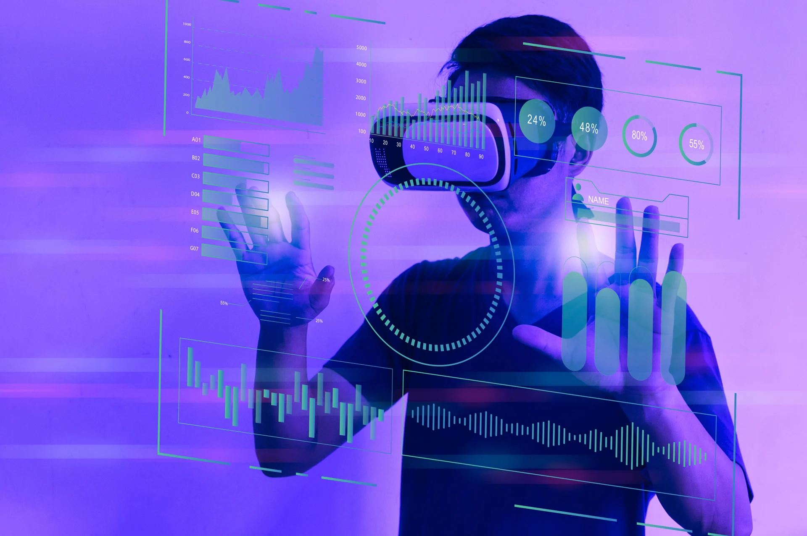
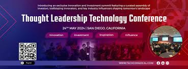
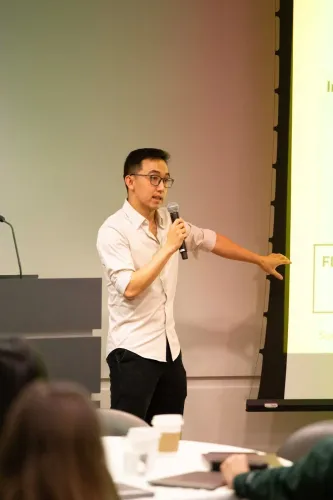

TechCon® North America was first held in 1996 in New Orleans, Louisiana. It has since moved about the U.S.,
accommodating the growing number of delegates and utility hosts. It often includes a regional facility tour of the
sponsoring utility. Most recently, the conference averaged 200 in attendance representing 11 various countries and 30
interactive exhibiting corporations. TechCon North America offers a vibrant and unparalleled learning experience with
top-notch topics and speakers.
Mission

Our Mission
Recognizing the importance of advocacy and collaboration in shaping policies and frameworks conducive to innovation and
entrepreneurship. Engaging with policymakers, industry leaders, and other stakeholders to create an ecosystem that
fosters innovation, rewards risk-taking, and promotes inclusive growth.
Past Speakers

TechCon offered two workshops for attendees to learn more about how LLMs work and how to use them effectively. “Custom
GPTs for Business Leaders” with AI/ML advisor Manny Bernabe
and “Introduction to Language Models for Business Leaders” with Booth PhD and ML expert Kevin Lee, ‘24.